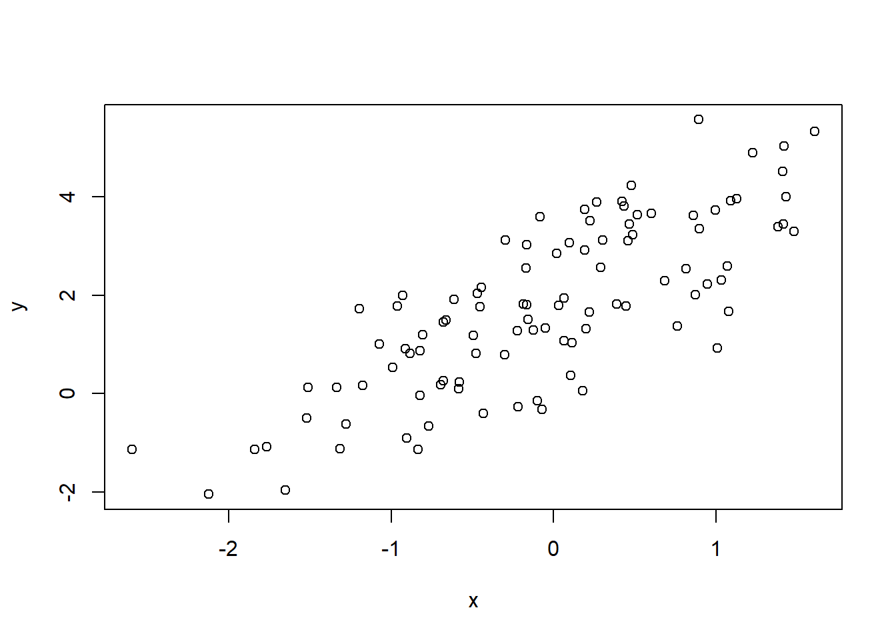
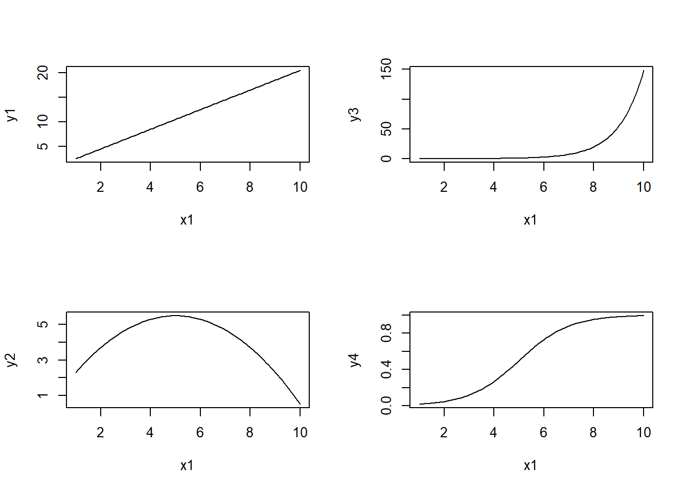
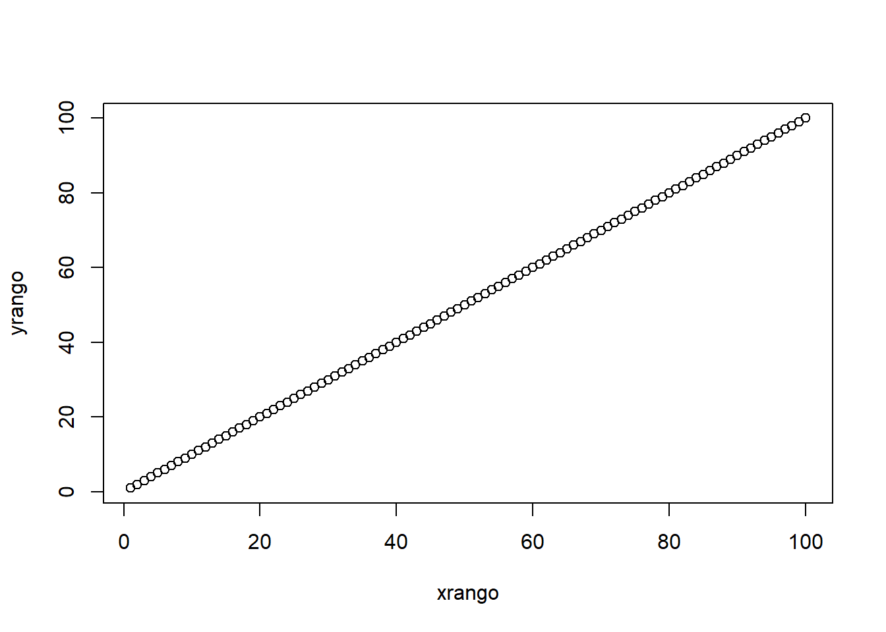
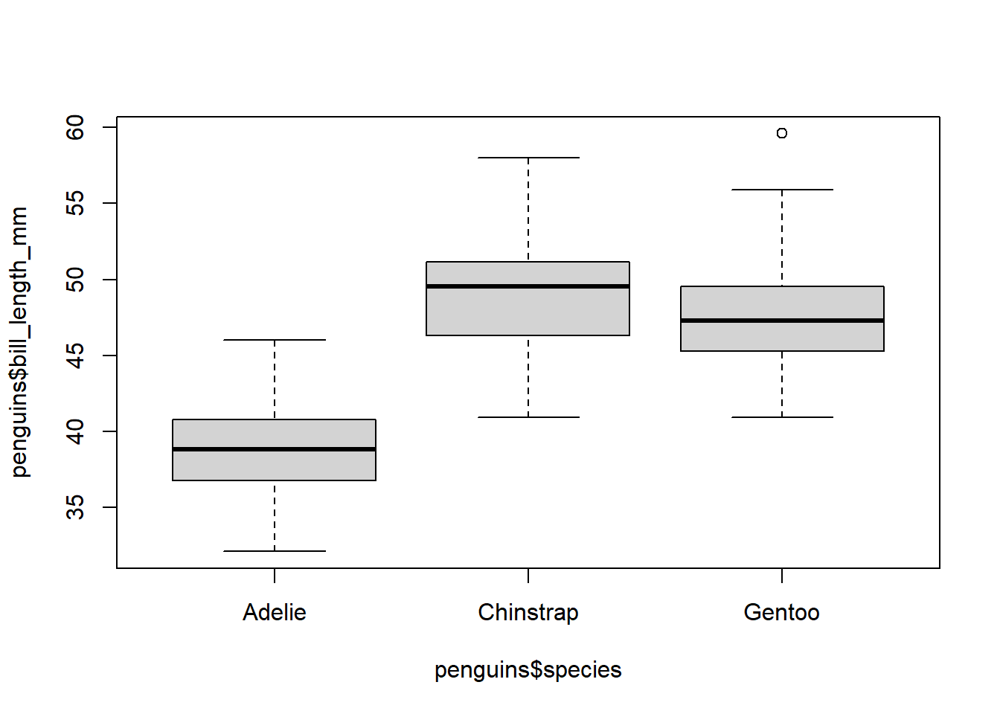
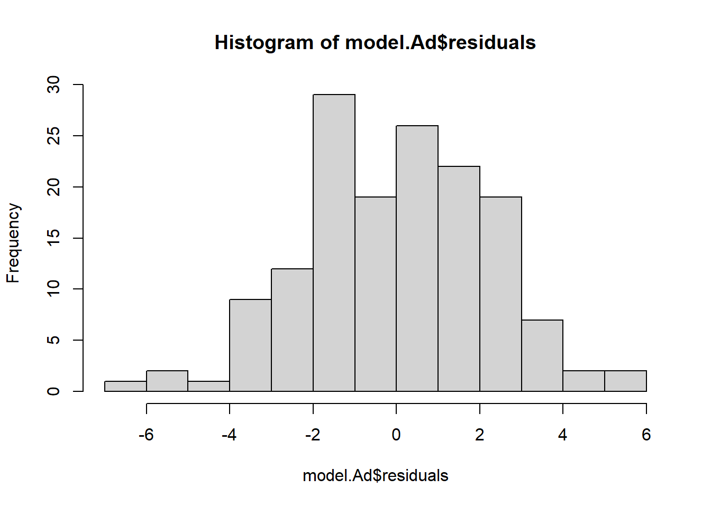
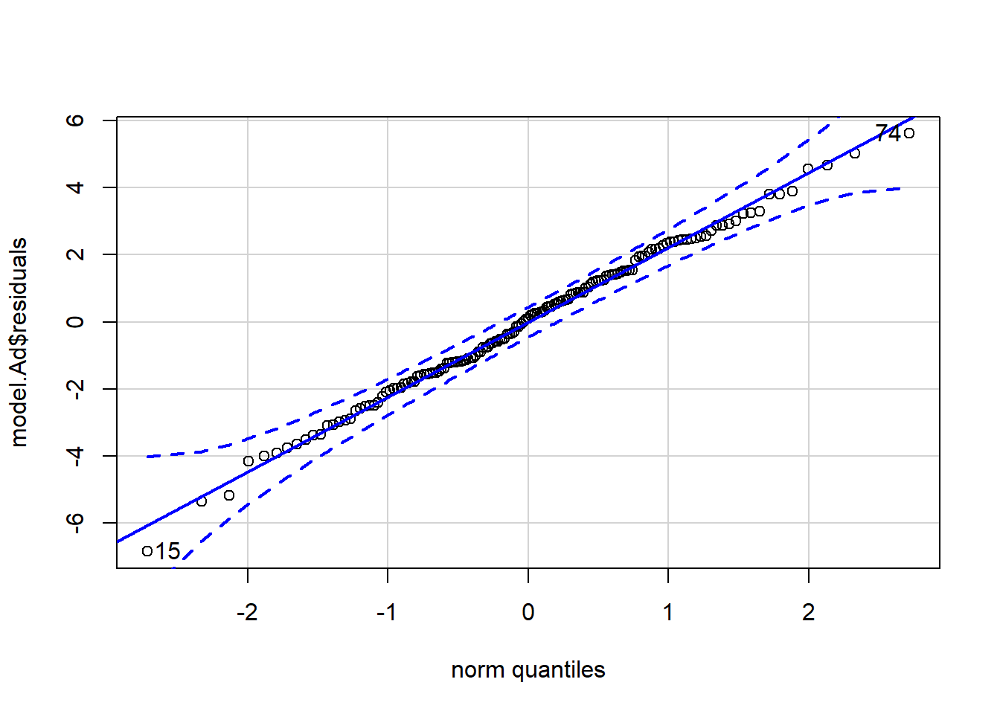
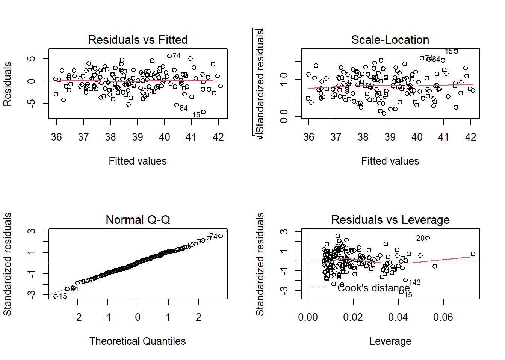
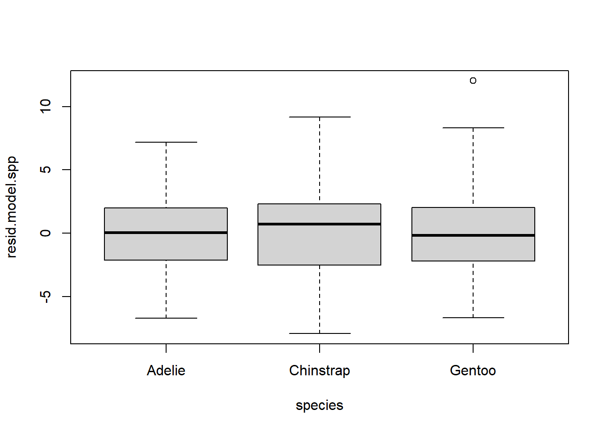
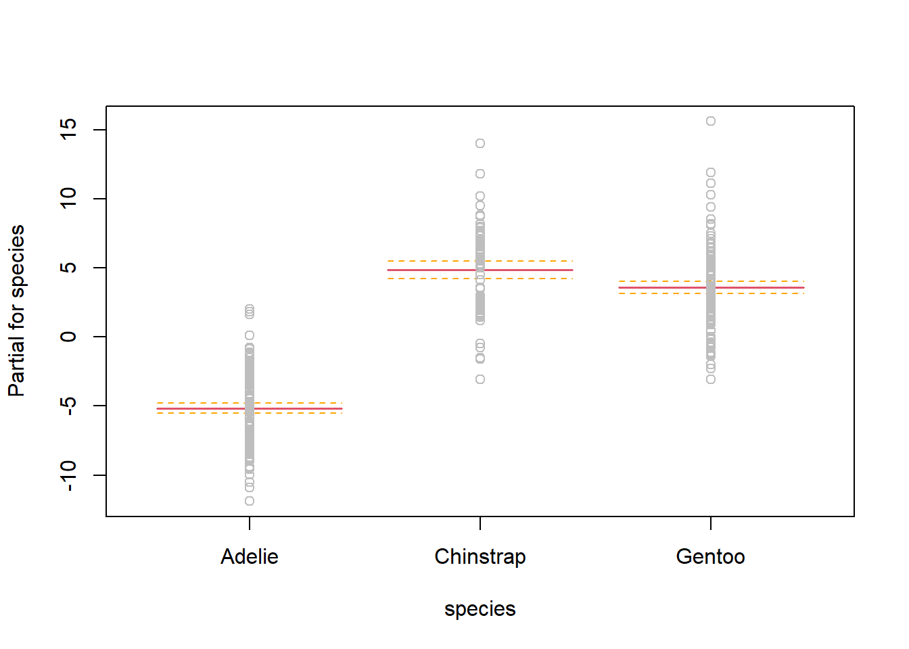
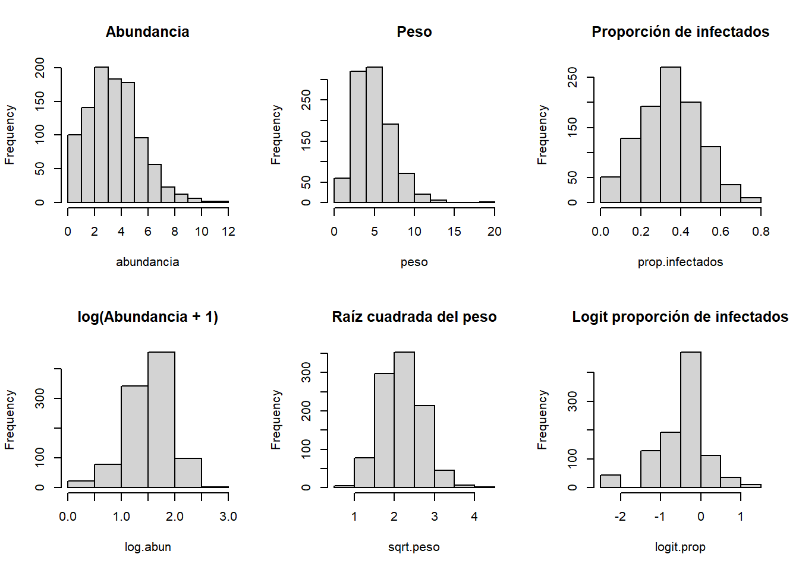

Curso 2022: Modelos lineales y aditivos en ecologia
2022-04-04
1 Introduccion a los modelos lineales
1.1 Definicion de modelo lineal
set.seed(999)
layout(matrix(1:4, 2, 2))
x <- rnorm(100)
y1 <- 2 + 1.5*x
plot(x, y1)
y2 <- 2 + 1.5*x - 0.2*x^2
plot(x, y2)
y3 <- exp(x)
plot(x, y3)
y4 <- log(y3)
plot(x, y4)
1.2 Correlacion lineal simple

## [1] 1.21263## [1] 0.7897866## [1] 0.7897866##
## Pearson's product-moment correlation
##
## data: x and y
## t = 12.747, df = 98, p-value < 2.2e-16
## alternative hypothesis: true correlation is not equal to 0
## 95 percent confidence interval:
## 0.7023179 0.8537620
## sample estimates:
## cor
## 0.7897866# Monotonia
layout(matrix(1:4, 2, 2))
x1 <- seq(1, 10, length = 100)
y1 <- 0.5 + 2*x1
plot(x1, y1, type = "l")
y2 <- 0.5 + 2*x1 - 0.2*x1^2
plot(x1, y2, type = "l")
y3 <- exp(-5 + x1)
plot(x1, y3, type = "l")
y4 <- exp(-5 + x1)/(1 + exp(-5 + x1))
plot(x1, y4, type = "l")
## [1] 1
## [1] 11.3 Matrices de correlacion
A continuacion se presentan las medidas del tamanio corporal en adultos de tres especies de pinguinos en islas del Archipielago Palmer, Antartida.
## Warning: package 'palmerpenguins' was built under R version 4.0.5## tibble [344 x 8] (S3: tbl_df/tbl/data.frame)
## $ species : Factor w/ 3 levels "Adelie","Chinstrap",..: 1 1 1 1 1 1 1 1 1 1 ...
## $ island : Factor w/ 3 levels "Biscoe","Dream",..: 3 3 3 3 3 3 3 3 3 3 ...
## $ bill_length_mm : num [1:344] 39.1 39.5 40.3 NA 36.7 39.3 38.9 39.2 34.1 42 ...
## $ bill_depth_mm : num [1:344] 18.7 17.4 18 NA 19.3 20.6 17.8 19.6 18.1 20.2 ...
## $ flipper_length_mm: int [1:344] 181 186 195 NA 193 190 181 195 193 190 ...
## $ body_mass_g : int [1:344] 3750 3800 3250 NA 3450 3650 3625 4675 3475 4250 ...
## $ sex : Factor w/ 2 levels "female","male": 2 1 1 NA 1 2 1 2 NA NA ...
## $ year : int [1:344] 2007 2007 2007 2007 2007 2007 2007 2007 2007 2007 ...## bill_length_mm bill_depth_mm flipper_length_mm body_mass_g
## bill_length_mm 1.0000000 -0.2350529 0.6561813 0.5951098
## bill_depth_mm -0.2350529 1.0000000 -0.5838512 -0.4719156
## flipper_length_mm 0.6561813 -0.5838512 1.0000000 0.8712018
## body_mass_g 0.5951098 -0.4719156 0.8712018 1.0000000pairs(penguins[, 3:6])
Ad <- subset(penguins, species == "Adelie")
round(cor(Ad[, 3:6], use = "complete.obs"), 2)## bill_length_mm bill_depth_mm flipper_length_mm body_mass_g
## bill_length_mm 1.00 0.39 0.33 0.55
## bill_depth_mm 0.39 1.00 0.31 0.58
## flipper_length_mm 0.33 0.31 1.00 0.47
## body_mass_g 0.55 0.58 0.47 1.00## Loading required package: lattice## Loading required package: survival## Loading required package: Formula## Loading required package: ggplot2## Warning: package 'ggplot2' was built under R version 4.0.5##
## Attaching package: 'Hmisc'## The following objects are masked from 'package:base':
##
## format.pval, units
## bill_length_mm bill_depth_mm flipper_length_mm body_mass_g
## bill_length_mm 1.00 0.39 0.33 0.55
## bill_depth_mm 0.39 1.00 0.31 0.58
## flipper_length_mm 0.33 0.31 1.00 0.47
## body_mass_g 0.55 0.58 0.47 1.00
##
## n= 151
##
##
## P
## bill_length_mm bill_depth_mm flipper_length_mm body_mass_g
## bill_length_mm 0e+00 0e+00 0e+00
## bill_depth_mm 0e+00 1e-04 0e+00
## flipper_length_mm 0e+00 1e-04 0e+00
## body_mass_g 0e+00 0e+00 0e+00## [1] NA 4.004485e-06 1.786194e-04 2.953193e-12 4.004485e-06
## [6] NA 2.437897e-04 1.199041e-13 1.786194e-04 2.437897e-04
## [11] NA 1.074612e-08 2.953193e-12 1.199041e-13 1.074612e-08
## [16] NA1.4 Regresion lineal simple
\[y = beta_0 + beta_1 x + epsilon\] \[epsilon sim N(0, sigma^2)\]
x <- rnorm(100)
e <- rnorm(100, mean = 0, sd = 1)
y <- 2 + 1.5*x + e
plot(x, y)
datos <- data.frame(x, y)
reg.simple <- lm(y ~ x, data = datos)
summary(reg.simple)##
## Call:
## lm(formula = y ~ x, data = datos)
##
## Residuals:
## Min 1Q Median 3Q Max
## -2.51881 -0.65262 -0.06149 0.59194 3.05669
##
## Coefficients:
## Estimate Std. Error t value Pr(>|t|)
## (Intercept) 1.9948 0.0996 20.03 <2e-16 ***
## x 1.4928 0.1020 14.64 <2e-16 ***
## ---
## Signif. codes: 0 '***' 0.001 '**' 0.01 '*' 0.05 '.' 0.1 ' ' 1
##
## Residual standard error: 0.996 on 98 degrees of freedom
## Multiple R-squared: 0.6863, Adjusted R-squared: 0.6831
## F-statistic: 214.4 on 1 and 98 DF, p-value: < 2.2e-16## [1] 1.492825## Estimate Std. Error t value Pr(>|t|)
## (Intercept) 1.994796 0.09960184 20.02770 2.042392e-36
## x 1.492825 0.10195980 14.64131 2.072208e-26## [1] 0.6862674SCE <- sum((mean(datos$y) - reg.simple$fitted)^2) # suma de cuadrados explicada
SCT <- sum((datos$y - mean(datos$y))^2) # suma de cuadrados total
R2 <- SCE/SCT
R2## [1] 0.6862674
1.6 Matrices de graficos de dispersion

pairs(penguins[, 3:6], pch = 19, col = c("red", "orange", "blue")[penguins$species], lower.panel = NULL)
##
## Attaching package: 'psych'## The following object is masked from 'package:Hmisc':
##
## describe## The following objects are masked from 'package:ggplot2':
##
## %+%, alphapairs.panels(Ad[, 3:6],
method = "pearson", # correlacion
density = FALSE, # graficos de densidad
ellipses = FALSE, # elipses de confianza
lm = TRUE) # recta
1.7 Regresion lineal multiple
\[y = beta_0 + beta_1 x_1 + beta_2 x_2 + ... + beta_n x_n + epsilon\] \[epsilon sim N(0, sigma^2)\]
Relacion entre la longitud del pico (bill_length_mm), masa corporal (body_mass_g) y alto del pico (bill_depth_mm) en pinguinos Adelia (\(Pygoscelis adeliae\)).
##
## Call:
## lm(formula = bill_length_mm ~ body_mass_g + bill_depth_mm, data = Ad)
##
## Residuals:
## Min 1Q Median 3Q Max
## -6.8363 -1.5105 0.0952 1.4967 5.6090
##
## Coefficients:
## Estimate Std. Error t value Pr(>|t|)
## (Intercept) 2.386e+01 2.752e+00 8.671 7.00e-15 ***
## body_mass_g 2.811e-03 4.853e-04 5.792 4.02e-08 ***
## bill_depth_mm 2.466e-01 1.829e-01 1.348 0.18
## ---
## Signif. codes: 0 '***' 0.001 '**' 0.01 '*' 0.05 '.' 0.1 ' ' 1
##
## Residual standard error: 2.228 on 148 degrees of freedom
## (1 observation deleted due to missingness)
## Multiple R-squared: 0.3097, Adjusted R-squared: 0.3004
## F-statistic: 33.21 on 2 and 148 DF, p-value: 1.222e-12sum.cuad.exp <- sum((mean(na.omit(Ad$bill_length_mm)) - model.Ad$fitted)^2)
sum.cuad.tot <- sum((na.omit(Ad$bill_length_mm) - mean(na.omit(Ad$bill_length_mm)))^2)
R2 <- sum.cuad.exp/sum.cuad.tot
R2## [1] 0.3097341# grafico de dispersion con plano de regresion
library(plot3D)
x <- Ad$body_mass_g
y <- Ad$bill_depth_mm
z <- Ad$bill_length_mm
x.pred <- seq(min(x, na.rm = T), max(x, na.rm = T), length = 30)
y.pred <- seq(min(y, na.rm = T), max(y, na.rm = T), length = 30)
xy <- expand.grid(body_mass_g = x.pred, bill_depth_mm = y.pred)
z.pred <- matrix(predict(model.Ad, newdata = xy), nrow = 30, ncol = 30)
scatter3D(x, y, z, pch = 18, cex = 2,
theta = 35, phi = 20, ticktype = "detailed",
xlab = "Masa corporal", ylab = "Alto del pico",
zlab = "Longitud del pico",
surf = list(x = x.pred, y = y.pred, z = z.pred, facets = NA))
library(visreg)
Ad$bill_depth_cat <- cut(Ad$bill_depth_mm, 3,
labels = c("Small", "Intermediate", "Large"))
model.Ad_cat <- lm(bill_length_mm ~ body_mass_g + bill_depth_cat, data = Ad)
visreg(model.Ad_cat, "body_mass_g", "bill_depth_cat", gg = TRUE)
1.8 Variables categoricas
model.penguins1 <- lm(bill_length_mm ~ body_mass_g + species, data = penguins)
summary(model.penguins1)##
## Call:
## lm(formula = bill_length_mm ~ body_mass_g + species, data = penguins)
##
## Residuals:
## Min 1Q Median 3Q Max
## -6.8129 -1.6718 0.1336 1.4720 9.2902
##
## Coefficients:
## Estimate Std. Error t value Pr(>|t|)
## (Intercept) 2.492e+01 1.063e+00 23.443 < 2e-16 ***
## body_mass_g 3.749e-03 2.823e-04 13.276 < 2e-16 ***
## speciesChinstrap 9.921e+00 3.511e-01 28.258 < 2e-16 ***
## speciesGentoo 3.558e+00 4.858e-01 7.324 1.78e-12 ***
## ---
## Signif. codes: 0 '***' 0.001 '**' 0.01 '*' 0.05 '.' 0.1 ' ' 1
##
## Residual standard error: 2.403 on 338 degrees of freedom
## (2 observations deleted due to missingness)
## Multiple R-squared: 0.808, Adjusted R-squared: 0.8063
## F-statistic: 474 on 3 and 338 DF, p-value: < 2.2e-16model.penguins2 <- lm(bill_length_mm ~ body_mass_g + species + body_mass_g:species, data = penguins)
summary(model.penguins2)##
## Call:
## lm(formula = bill_length_mm ~ body_mass_g + species + body_mass_g:species,
## data = penguins)
##
## Residuals:
## Min 1Q Median 3Q Max
## -6.4208 -1.6461 0.0919 1.4718 9.3138
##
## Coefficients:
## Estimate Std. Error t value Pr(>|t|)
## (Intercept) 26.9941391 1.5926015 16.950 < 2e-16 ***
## body_mass_g 0.0031879 0.0004271 7.464 7.27e-13 ***
## speciesChinstrap 5.1800537 3.2746719 1.582 0.115
## speciesGentoo -0.2545907 2.7138655 -0.094 0.925
## body_mass_g:speciesChinstrap 0.0012748 0.0008740 1.459 0.146
## body_mass_g:speciesGentoo 0.0009030 0.0006066 1.489 0.138
## ---
## Signif. codes: 0 '***' 0.001 '**' 0.01 '*' 0.05 '.' 0.1 ' ' 1
##
## Residual standard error: 2.399 on 336 degrees of freedom
## (2 observations deleted due to missingness)
## Multiple R-squared: 0.8098, Adjusted R-squared: 0.807
## F-statistic: 286.1 on 5 and 336 DF, p-value: < 2.2e-16## Analysis of Variance Table
##
## Response: bill_length_mm
## Df Sum Sq Mean Sq F value Pr(>F)
## body_mass_g 1 3599.7 3599.7 625.5924 <2e-16 ***
## species 2 4612.5 2306.3 400.8045 <2e-16 ***
## body_mass_g:species 2 18.6 9.3 1.6159 0.2003
## Residuals 336 1933.4 5.8
## ---
## Signif. codes: 0 '***' 0.001 '**' 0.01 '*' 0.05 '.' 0.1 ' ' 11.9 Test de t
Se muestran los tiempos de coagulacion sanguínea (min) en conejos bajo el efecto de dos drogas (A y B).
t_coag <- c(8.8, 8.4, 7.9, 8.7, 9.1, 9.6, 9.5,
9.9, 9.0, 11.1, 9.6, 8.7, 10.4, 9.5)
droga <- c(rep("A", 7), rep("B", 7))
coag <- data.frame(t_coag, droga)
t.test(t_coag ~ droga, var.equal = TRUE, data = coag)##
## Two Sample t-test
##
## data: t_coag by droga
## t = -2.3063, df = 12, p-value = 0.03974
## alternative hypothesis: true difference in means is not equal to 0
## 95 percent confidence interval:
## -1.72245499 -0.04897358
## sample estimates:
## mean in group A mean in group B
## 8.857143 9.742857##
## Call:
## lm(formula = t_coag ~ droga, data = coag)
##
## Residuals:
## Min 1Q Median 3Q Max
## -1.0429 -0.4036 -0.1000 0.5429 1.3571
##
## Coefficients:
## Estimate Std. Error t value Pr(>|t|)
## (Intercept) 8.8571 0.2716 32.617 4.37e-13 ***
## drogaB 0.8857 0.3840 2.306 0.0397 *
## ---
## Signif. codes: 0 '***' 0.001 '**' 0.01 '*' 0.05 '.' 0.1 ' ' 1
##
## Residual standard error: 0.7185 on 12 degrees of freedom
## Multiple R-squared: 0.3071, Adjusted R-squared: 0.2494
## F-statistic: 5.319 on 1 and 12 DF, p-value: 0.03974## [1] 0.8857143##
## F test to compare two variances
##
## data: t_coag[1:7] and t_coag[8:14]
## F = 0.54196, num df = 6, denom df = 6, p-value = 0.4749
## alternative hypothesis: true ratio of variances is not equal to 1
## 95 percent confidence interval:
## 0.09312469 3.15409283
## sample estimates:
## ratio of variances
## 0.5419631.10 Test de t pareado
fotosint <- c(1.42, 1.4, 1.44, 1.44, 1.42, 1.46, 1.49, 1.5, 1.42, 1.48, 1.38, 1.36, 1.47, 1.39, 1.43, 1.41, 1.43, 1.45, 1.36, 1.46)
nutriente <- c(rep("N1", 10), rep("N2", 10))
plantas <- data.frame(fotosint, nutriente)
t.test(fotosint ~ nutriente, paired = TRUE, data = plantas)##
## Paired t-test
##
## data: fotosint by nutriente
## t = 3.4138, df = 9, p-value = 0.007703
## alternative hypothesis: true difference in means is not equal to 0
## 95 percent confidence interval:
## 0.01113248 0.05486752
## sample estimates:
## mean of the differences
## 0.0331.11 Analisis de la varianza
Se quiere analizar si hay diferencias entre la longitud del pico en las tres especies de pinguino en el Archipielago Palmer.

## Df Sum Sq Mean Sq F value Pr(>F)
## species 2 7015 3508 397.3 <2e-16 ***
## Residuals 330 2914 9
## ---
## Signif. codes: 0 '***' 0.001 '**' 0.01 '*' 0.05 '.' 0.1 ' ' 1##
## Call:
## lm(formula = bill_length_mm ~ species, data = na.omit(penguins))
##
## Residuals:
## Min 1Q Median 3Q Max
## -7.934 -2.234 0.076 2.066 12.032
##
## Coefficients:
## Estimate Std. Error t value Pr(>|t|)
## (Intercept) 38.8240 0.2459 157.88 <2e-16 ***
## speciesChinstrap 10.0099 0.4362 22.95 <2e-16 ***
## speciesGentoo 8.7441 0.3670 23.83 <2e-16 ***
## ---
## Signif. codes: 0 '***' 0.001 '**' 0.01 '*' 0.05 '.' 0.1 ' ' 1
##
## Residual standard error: 2.971 on 330 degrees of freedom
## Multiple R-squared: 0.7066, Adjusted R-squared: 0.7048
## F-statistic: 397.3 on 2 and 330 DF, p-value: < 2.2e-16## Tukey multiple comparisons of means
## 95% family-wise confidence level
##
## Fit: aov(formula = bill_length_mm ~ species, data = na.omit(penguins))
##
## $species
## diff lwr upr p adj
## Chinstrap-Adelie 10.009851 8.982789 11.0369128 0.0000000
## Gentoo-Adelie 8.744095 7.880135 9.6080546 0.0000000
## Gentoo-Chinstrap -1.265756 -2.329197 -0.2023151 0.01482121.12 Supuestos y transformaciones
1.12.1 Colinealidad
## Loading required package: carData##
## Attaching package: 'car'## The following object is masked from 'package:psych':
##
## logit## body_mass_g bill_depth_mm
## 1.496861 1.4968611.12.2 Analisis de residuos


## 15 74
## 14 73
layout(1)
# test de t y ANOVA
model.spp <- aov(bill_length_mm ~ species, data = na.omit(penguins))
resid.model.spp <- resid(model.spp)
boxplot(resid.model.spp ~ species, data = na.omit(penguins)) 

##
## Bartlett test of homogeneity of variances
##
## data: resid.model.spp by species
## Bartlett's K-squared = 5.6782, df = 2, p-value = 0.058481.13 Transformaciones
\[log(y) = y' = beta_0 + beta_1 x_1 + beta_2 x_2 + ... + beta_n x_n + epsilon\]
layout(matrix(1:6, 2, 3))
abundancia <- rpois(n = 1000, lambda = 4)
hist(abundancia, main = "Abundancia")
log.abun <- log(abundancia + 1)
hist(log.abun, breaks = 6, main = "log(Abundancia + 1)")
peso <- rgamma(n = 1000, shape = 5)
hist(peso, main = "Peso")
sqrt.peso <- sqrt(peso)
hist(sqrt.peso, breaks = 6, main = "Raiz cuadrada del peso")
prop.infectados <- rbinom(n = 1000, size = 10, p = 0.4)/10
hist(prop.infectados, main = "Proporcion de infectados")
logit.prop <- log(prop.infectados/(1 - prop.infectados))
hist(logit.prop, main = "Logit proporcion de infectados", breaks = 6)